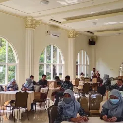
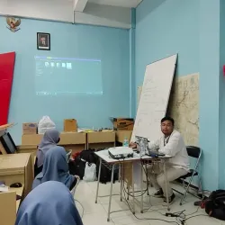
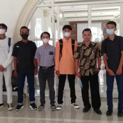
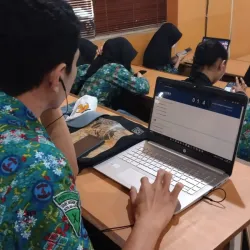
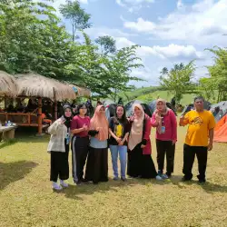
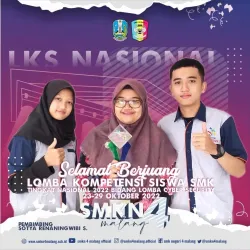
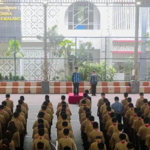

Berita  Studi Tiru SMK Negeri 5 Yogyakarta, SMKN 3 Sidrap – Sulsel, SMKN 4 Jember dan SMKN 1 Kutalimbaru – Sumut Program SMK Pusat Keunggulan merupakan program pengembangan SMK dengan kompetensi keahlian tertentu dalam peningkatan kualitas dan kinerja, yang diperkuat melalui kemitraan dan penyelarasan dengan […] Last updated 3 mins ago  Guru Tamu Konsentrasi Keahlian Animasi Pada hari Senin – Selasa, 31 Oktober sampai dengan 2 November 2022, Konsentrasi Keahlian Animasi menggelar acara Guru Tamu dari Industri. Acara ini menghadirkan […] Last updated 3 mins ago Studi Tiru SMK Negeri 6 Surakarta, SMK Negeri 1 Ciamis, dan SMK Negeri 1 Manado Dalam rangka bantuan pelaksanaan bantuan pemerintah program pengembangan sekolah Pusat Keunggulan Pemadanan tahun 2022, terdapat beberapa sekolah yang melaksanakan Studi Tiru di SMK Negeri […] Last updated 3 mins ago  Seleksi Alumni oleh PT Mediaqu Adikarya Creativa Sukoharjo – Jawa Tengah Bursa Kerja Khusus (BKK) adalah sebuah lembaga yang dibentuk di Sekolah Menengah Kejuruan Negeri dan Swasta, sebagai unit pelaksana yang memberikan pelayanan dan informasi […] Last updated 3 mins ago TKJ Hadirkan NOC dan DevOps Engineer jadi Guru Tamu Konsentrasi Keahlian Teknik Komputer dan Jaringan menggelar acara Guru Tamu dari Industri pada hari Rabu, 9 November 2022. Acara tersebut dihadiri oleh dua narasumber […] Last updated 3 mins ago  Tes Uji Kompetensi Bahasa Indonesia (UKBI) UKBI adalah sarana uji untuk mengukur kemahiran seseorang dalam berbahasa Indonesia lisan atau tulis sebagaimana dikutip dalam laman web ukbi.kemdikbud.go.id. UKBI terdiri atas lima […] Last updated 3 mins ago  Literasi Camp 4 Desa Duwet – Tumpang Kegiatan Literasi Camp ke-4 tahun 2022 dilaksanakan pada tanggal 29 – 30 Oktober 2022 bertempat di “Coffe Wedhang” depan wisata Bromo Transit Park Desa […] Last updated 3 mins ago  Juara 3 LKS Nasional ke 30 bidang Lomba Cyber Security Ucapan selamat kepada Syifa Almaira P.F. Kelas XII TKJ A dan Muhammad Naufal K. Kelas XII TKJ B yang telah meraih prestasi Juara 3 […] Last updated 3 mins ago  Peringatan Sumpah Pemuda ke-94 Malang, 28 Oktober 2022 dilaksanakan peringatan Hari Sumpah Pemuda ke-94 dengan tema “Bersatu Membangun Bangsa”. Peringatan sumpah pemuda dilaksanakan di Lapangan Serbaguna (Labana) SMK […] Last updated 3 mins ago